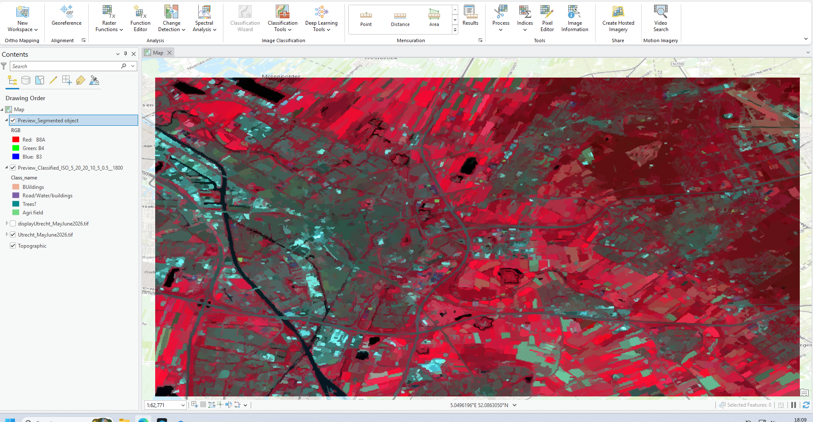
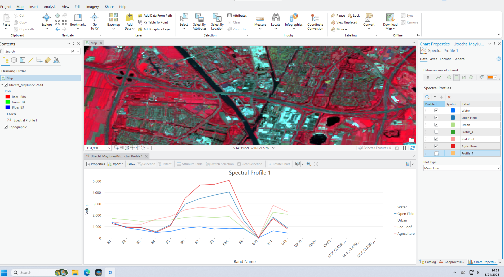
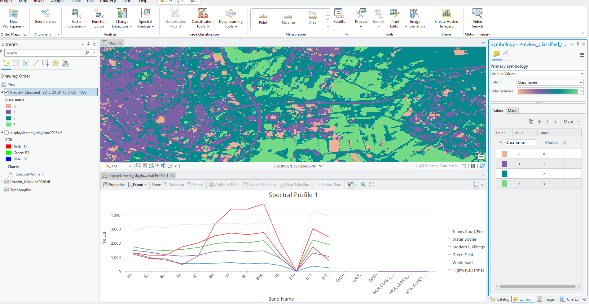
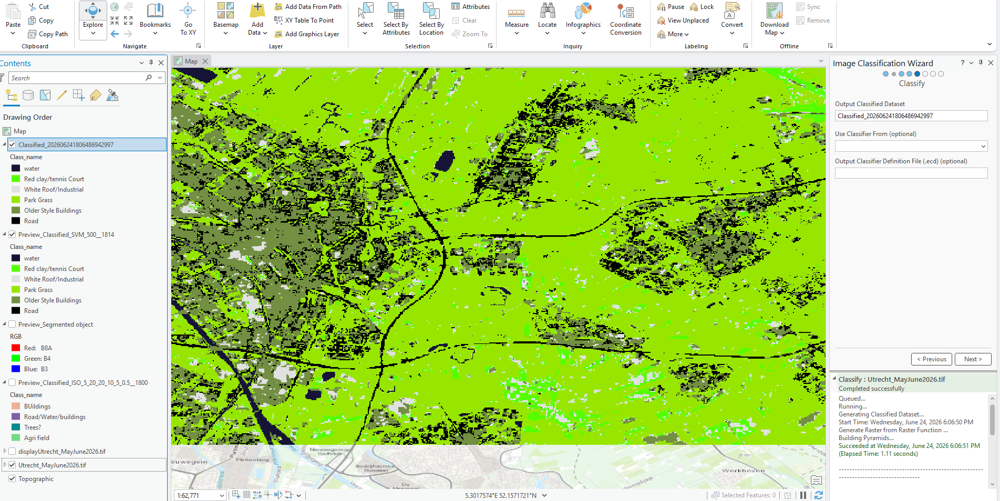
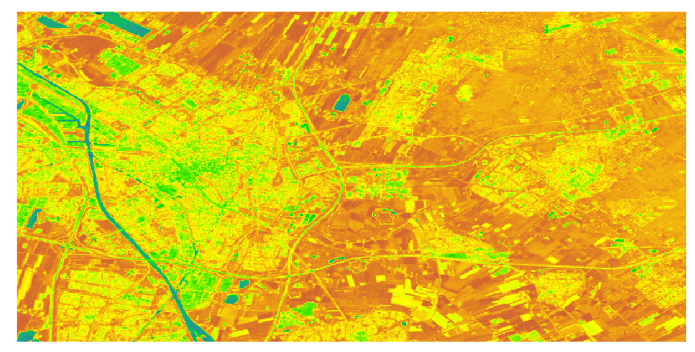

Final Map

Final land cover classification map.
I chose this as my final map because it reminds me of a Dutch impressionist painting. I also feel that object based classification is better for geographical features like agricultural fields and plants, because it groups areas into cleaner shapes instead of showing them as individual pixels.
Esri Certificate

Esri course certificate for supervised pixel based image classification.
Question 1: Describe to your website visitor, the value of automated land cover classification. Tell the reader the difference between supervised and unsupervised classification.
Automated land cover classification is useful because it allows us to classify substantial amounts of satellite imaging according to categories (usually set by us). This method allows us to process imagery according to whether it is water, forest, urban, etc. Instead of manually classifying data, the computer can use the spectral imaging from satellites to determine what type of land to use it is. This makes it easier for us to study changes in vegetation and land use, soil health, etc.
The main difference in supervised and unsupervised lies in the amount of supervision that we place. As the name suggests, humans supervise the classification by creating training samples for different classifications of use. For example, features that are completely certain (such as roads and water bodies) can be classified easily due to the consistency and comparing map patterns. These features and other trained features allow for the creation of standardized sets. In unsupervised, the software classifies such pixels automatically without being told what each pixel color group means. The user then looks at the results and classifies accordingly. Supervised classification is more controlled as it uses human training, but it is more dependent on the training samples, therefore. Unsupervised could be faster and may find patterns that we ignore as humans, but it can also lose nuance that humans know.
Question 2: What is the approximate length and width of each pixel – the spatial resolution?
I wasn't completely sure but I believe that it is 18-19metres as the length and width. I expected it to be 10 m, and this leads me to believe that I made a mistake
Question 3: Provide a screenshot of your spectral profile with at least 4 different land covers.

Spectral profile with at least 4 different land covers.
Question 5: Provide a screenshot of your Unsupervised Pixel Based Classification.

Unsupervised Pixel Based Classification.
Question 6: Provide a screenshot of your Unsupervised Object Based Classification. Preview only is fine.
Unsupervised Object Based Classification.
Question 7: Provide a screenshot of your Supervised Pixel Based Classification.

Supervised Pixel Based Classification.
Wasnt too sure of this
Question 8: What were the results of your confusion matrix? Explain the aim of a confusion matrix and the difference between producer and user error to your website visitors.
Wasn't done as advised by Professor.
Question 9: Screenshot of NDVI with a color scheme appropriate for vegetation health. Why do you think this color scheme is appropriate for communicating vegetation health? Who is the target audience?

NDVI map with vegetation health color scheme.
I actually chose this map color scheme on the advice of my neighbour but in hindsight I would've likely chosen a different color scheme. I felt that the choice of a blue-green-orange scheme (with orange being greener regions) worked as it looked a lot like the heat maps; I have seen weather forecasts and was visually striking. But looking at it now, I should've gone with a classic green color scheme with darker green region displaying a denser region of vegetation. If I gone with this classic pattern, it wouldve been more intuitive to the general public who justifiably view green as the plant color. Visual comparison is extremely important for a map like this as we are attempting to catch trends and compare maps.
Question 10: What are the strengths and weaknesses of each of the methods you tried and shared above? What unique insight did you find from each? Were there any anomalies in the data?
Each method has its own advantages and disadvantages and allows us to view different types of data here and understand different patterns.
The unsupervised pixel-based classifications allowed us to get a quick grasp on the dynamics of the map as we did not have to train classes and we could quickly see potential distributions. While the computer could group pixels by similarity in color, i still had to investigate what each of those groups actually meant. This could be confusing as different land use types could have similar colors such as in the cases of roofs and certain fallow fields. In the end while I did receive some interesting first hand info, further refinement was necessary.
I found that unsupervised object based classification had similar problems like the previous method. I found this method to be quite aesthetically pleasant as it did not have the seemingly unnatural look of pixels. This helped the map appear more cleaner and less like “static”. In urban areas where great variations can be seen to changes in building structure or material, this method helped reduce the effects. However I could definitely see some generalizations and I felt that this method was somewhat inaccurate.
The supervised ppixel based classification was more controlled as i could provide it with sampels. This was extremely useful in the case of roads and canals as the deep blue color stuck and affected its neighboring sites. I found the increased control to be more useful but I had difficulty property training the data initially and I still feel as if I made many mistakes. This method has potential to move your analysis to the next level but it requires quality and time otherwise it can backfire more than unsupervised techniques. Different plant types could reflect slightly different lights. This helps explain why classification needs manual control but I feel that I could've just as easily missed certain areas.
I felt that the NDVI map superseded many of the other techniques. I am not really sure of it’s mechanics (except for the formula) but I wasn't sure if it was better than the previous methods. I am also not sure if it could handle the different stages of agriculture that I could account for in supervised.
All this shows us that multiple approaches are necessary proper insights as. Mixed pixels due to proximity were a special problem as they could completely change the position of 1 pixel and they would require further categorization. Recreational grass and other parks were also annoying for the same reason of contamination. While this method is meant to account for such problems, I was still worried about it. Perhaps this problem could be fixed with better resolution but that ids outside the scope of this project. I also found the emergence of tennis courts (which are normally red) to be green on my map to be somewhat funny.